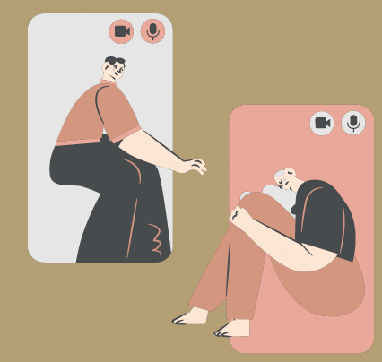
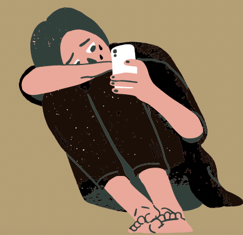

SoMe og spiseforstyrrelse
Hvor meget skal der egentlig til før man udvikler en spiseforstyrrelse? Overraskende nok, ikke særlig meget når man samtidig er på sociale medier nu til dags.
Sociale medier har en tendens til at fortælle os om hvordan noget skal være og se ud, og når man ikke ligner den beskrivelse, kan det være et slag på hovedet.
Det er måden man ikke går glip af noget på, man kan kontakte alle, man får tips og tricks til diverse ting.
Sociale medier har desværre både ulemper og fordele.
Vi elsker at se hvor langt folk er i livet, for at sammenligne vores egen succes med deres. Ja den del skal stoppes.
Vi er ikke alle nået lige langt i livet, andres hverdag kan være de træner direkte efter skole, mens de lever livet.
Så er der os der ikke træner hver dag efter skole, og knap nok når at lave lektier. Det skal der også være plads til. Ryd op i din feed. Fjern alle der giver dig et lavere selvværd, på alle sociale medier, Twitter, Instagram og Facebook. Det kan måske være svært til at starte med, fordi hvis ikke man følger folk kan man ikke se deres udvikling konstant. Døjer du med spiseforstyrrelse, snak med nogen, det hjælper at få hjælp.
